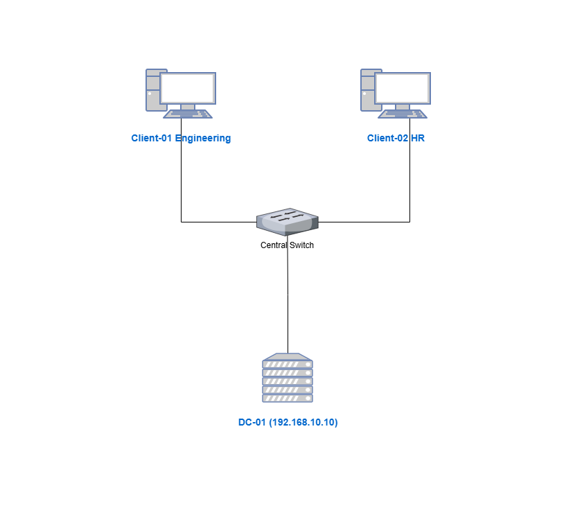
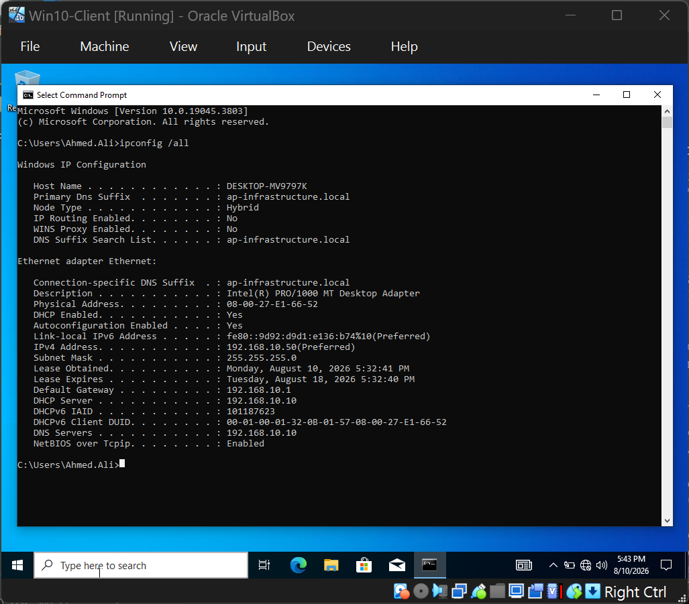
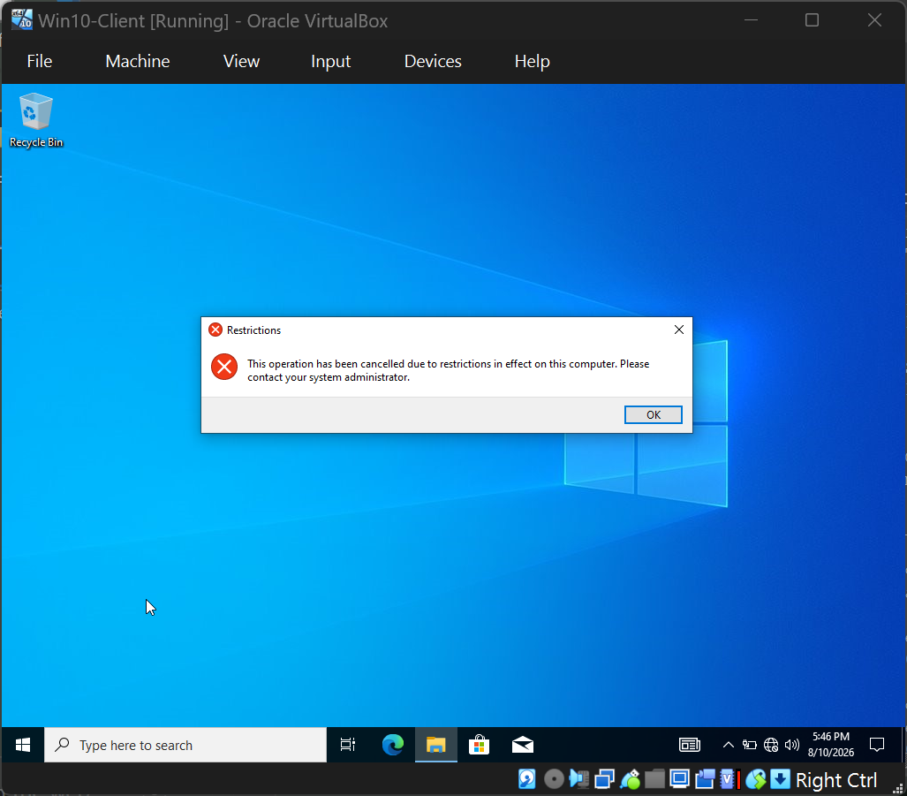
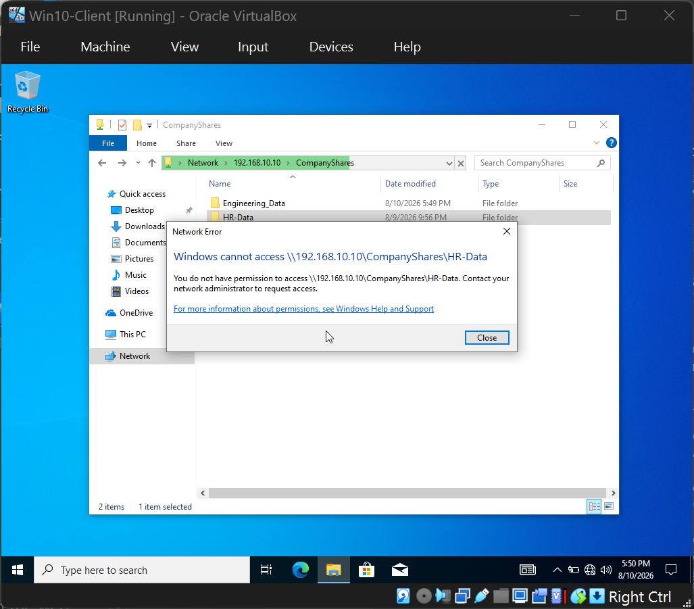

Enterprise Infrastructure Deployment & Security Hardening Lab
This production-grade simulation project demonstrates the deployment of a highly secure corporate IT infrastructure environment. It replicates critical compliance and engineering operations required for an IT Systems & Infrastructure Support Specialist, specifically aligning with ITIL frameworks for delivery, change control, and system validation.
Configured and promoted a Windows Server 2022 instance to act as the primary Domain Controller governing the root domain forest: ap-infrastructure.local. Core infrastructure services were deployed directly on the host instance:


To eliminate unauthorized host configurations and block common data exfiltration methods, a centralized Group Policy Object (Secure_Workstation_Policy) was engineered and linked directly to the organizational units:

Implemented structural department isolation according to the Principle of Least Privilege (PoLP):
GG_Engineering and GG_HR.Engineering_Data and HR_Data) to eliminate default domain user privileges.HQ-HP-LaserJet-Printer) mapped directly via GPO logic to user profiles.
Watch this quick technical verification video showcasing active Directory Organizational Units, DHCP validation, GPO restriction enforcement, and strict NTFS departmental access control on the Client endpoint.
The deployment was validated under a strict, standardized ITIL-aligned testing template to simulate official stakeholder sign-off and production hand-over guidelines.
Download Full Technical ITR Report (PDF)